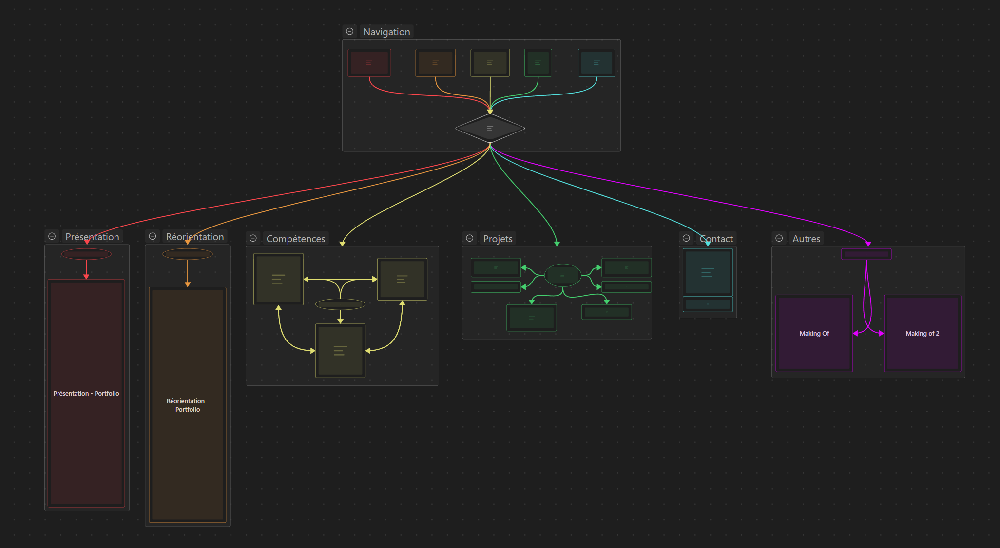
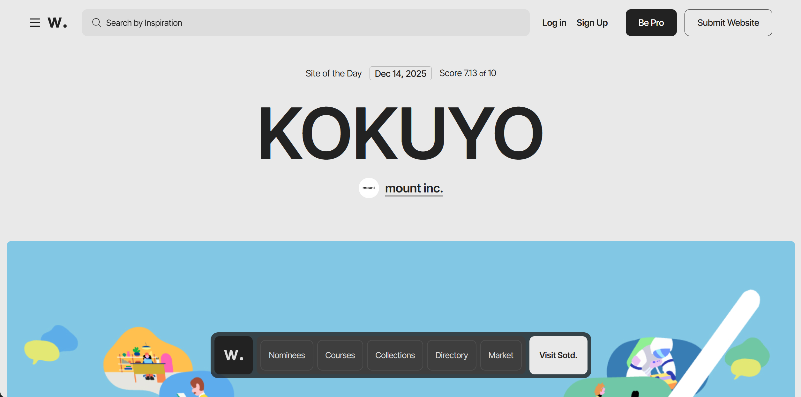
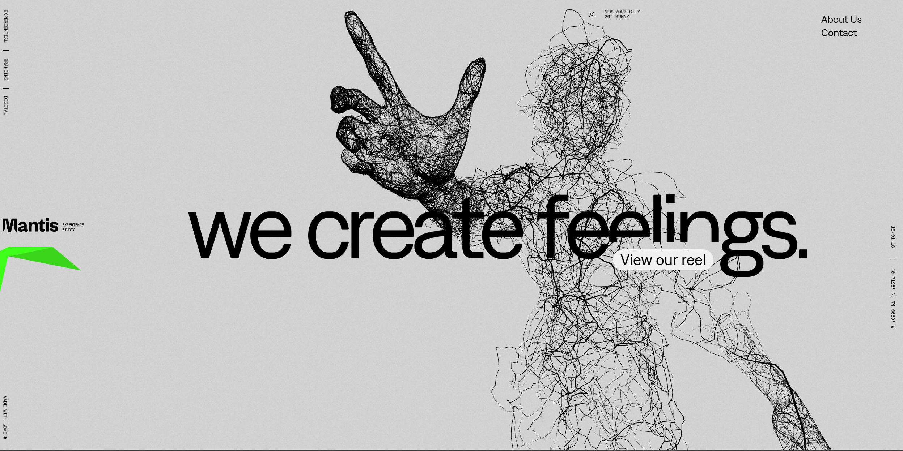

Le Processus de Création

Fig 1. La définition des besoins sur Obsidian
Fig 1. La définition des besoins sur Obsidian
01
Définition des objectifs
Avant de me lancer, j'ai défini mes objectifs. Pas vaguement, vraiment pour comprendre pourquoi, pour qui, comment.
Pourquoi : Je voulais quelque chose qui montre ma démarche, ma façon de penser. Quelque chose où on pourra se dire "ok là il a réfléchi".
Pour qui : Pour moi d'abord j'avais envie d'apprendre. Et pour les recruteurs MMI pour leur prouver que je suis capable de structurer un projet ambitieux.
Comment : Honnêtement, je n'avais pas les compétences pour faire seul ce que j'imaginais. Mais au lieu de rabaisser ma vision, j'ai décidé que l'IA serait uniquement un outil, pas une excuse.
Pour qui : Pour moi d'abord j'avais envie d'apprendre. Et pour les recruteurs MMI pour leur prouver que je suis capable de structurer un projet ambitieux.
Comment : Honnêtement, je n'avais pas les compétences pour faire seul ce que j'imaginais. Mais au lieu de rabaisser ma vision, j'ai décidé que l'IA serait uniquement un outil, pas une excuse.
[ IMAGE MANQUANTE ]
Fig 2. Les choix technologiques
02
Il était un commencement
Trois options s'offraient à moi : faire quelque chose de simple en HTML/CSS, utiliser un CMS type WordPress, ou viser plus haut.
J'ai choisi la troisième option, non pas pour éviter l'effort, mais au contraire pour explorer un terrain où je pouvais apprendre en avançant et transformer ma motivation théorique en ambition empirique.
Fig 3. Découverte de Three.js via Claude Artifacts
03
The Way of Code
C'est en explorant les Artefacts publics de Claude IA que j'ai découvert ce site. La page 26, avec ses particules qui bougent comme des vagues, m'a vraiment inspiré.
En l'inspectant et en comprenant comment il était construit, j'ai découvert Three.js — une bibliothèque JavaScript pour faire de la 3D sur le web. Jusqu'alors, j'ignorais qu'il était même possible de faire une telle chose.
[ CONCEPT ART ]
Fig 4. L'inspiration spatiale
04
Le choix du trou noir
Quand j'étais petit, j'étais fasciné par l'espace. J'admirais la lune en espérant y apercevoir le Petit Prince.
Je fus fort dépourvu lorsque la vérité fut venue : le Petit Prince n'habitait pas sur la lune, mais sur l'astéroïde B 612. Avoir choisi un trou noir est donc pour moi une symbolisation de cet émerveillement d'enfance que je tente de retrouver.
Fig 5. Modélisation du concept
05
La vision 3D
J'ai imaginé quelque chose d'ambitieux : un vrai trou noir en 3D. Une sphère noire entourée d'une spirale en particules.
Le site commencerait par un splash — une vue du trou noir en 3D de 45 degrés d'en haut. L'inspiration me venait des jeux vidéo gacha que je connais, car ils ont tous des splashs immersifs. Je voulais faire quelque chose de similaire.
Fig 6. Le mouvement de caméra
06
L'animation d'entrée
Sur le splash, un bouton "entrer" déclencherait l'animation. La caméra se déplacerait en ligne droite vers le centre de la sphère.
Au début, j'avais prévu que ça fonctionne au scroll. Mais j'ai réalisé que le concept d'un splash c'est d'être au début uniquement. J'ai opté pour un bouton qui lance directement l'animation. L'idée : le site se trouve au centre du trou noir — tu plonges à l'intérieur.

Fig 7. Recherche d'inspiration
Fig 7. Recherche d'inspiration
07
Awwwards
Un site qui regroupe les sites webs les plus impressionnants d'UI & UX designers professionnels. Rapidement devenu mon meilleur site découvert en 2025.
En explorant, deux sites en particulier m'ont vraiment marqué et ont changé ma vision du projet : Mantis et Heidelberg Materials.

Fig 8. Étude de cas : Mantis
Fig 8. Étude de cas : Mantis
08
Mantis — L'équilibre
Ce site m'a montré comment faire un site totalement original tout en restant équilibré. Les couleurs sobres, les textes courts mais impactants.
Ce qui m'a surtout frappé, c'est leur utilisation du 3D : des genres de statues où le scroll va de pair avec le mouvement caméra. Ça m'a vraiment influencé. J'ai réalisé qu'on pouvait intégrer la 3D de manière bien pensée sans que ça fasse "trop". Mantis.works a prouvé qu'on pouvait être impressionnant tout en gardant de la retenue.

Fig 9. Étude de cas : Heidelberg
09
Heidelberg — 3D Total
Le site entier n'était que du 3D. Pas des éléments 3D dans un environnement 2D — du pur 3D avec des mouvements de caméra.
Ça a été révélateur. J'ai pensé : "Pourquoi faire un site 2D après le splash alors que je peux faire le site entier en 3D avec des mouvements de caméra pour naviguer ?" Ça m'a montré qu'il n'y avait pas que le 2D avec intégration du 3D qui marche — il y a le 3D complet, et c'est merveilleux.
[ SCHÉMA NARRATIF ]
Fig 10. Changement de perspective
10
Le retour — L'eureka
Le portfolio n'était pas juste un site qui regroupe mes projets. Le portfolio lui-même était le projet. En littérature, on appelle ça un récit enchâssé.
J'ai compris qu'une véritable vitrine, c'est pas seulement une belle interface — c'est le site entier qui doit respirer créativité, originalité et storytelling. Un portfolio doit jouer sur ces trois éléments, pas juste les énumérer.
[ PLAN ARCHITECTURE ]
Fig 11. La nouvelle architecture
11
Le pivot majeur
J'ai revu entièrement mon plan. Le trou noir ne serait plus le splash d'introduction — c'était devenu l'objet central du site.
Au lieu de plonger dedans et de scroller verticalement, le site tournerait autour du trou noir avec des mouvements de caméra. C'était un changement radical. J'ai gardé deux éléments de la première vision : l'idée d'entrer dans le trou noir et les formes en particules. Je les ai réaffectés à la section À propos — elle se trouverait à l'intérieur du trou noir.
Conclusion
Ce projet a demandé beaucoup de travail — explorations, itérations, apprentissages. Ce n'était pas juste quelques prompts et c'est fini. J'ai expérimenté beaucoup, j'ai cherché beaucoup, j'ai échoué beaucoup mais surtout j'ai appris beaucoup.
L'IA a été un outil pour matérialiser une vision, pas l'inverse. Les vraies décisions — les découvertes, les pivots conscients, les choix de design — c'est moi.
Tout le monde dit qu'ils sont motivés et curieux, moi j'ai décidé de le montrer concrètement. Ce portfolio c'est une motivation concrète, pas celle des lettres de motivation. C'est 30 heures d'expérimentation, c'est des pivots conscients, c'est des découvertes qu'on suit.
C'est la preuve que quand une idée m'intéresse, je creuse vraiment. MMI c'est l'opportunité d'amplifier ça : apprendre vraiment le développement web, le design d'interfaces, la narration interactive.
L'IA a été un outil pour matérialiser une vision, pas l'inverse. Les vraies décisions — les découvertes, les pivots conscients, les choix de design — c'est moi.
Tout le monde dit qu'ils sont motivés et curieux, moi j'ai décidé de le montrer concrètement. Ce portfolio c'est une motivation concrète, pas celle des lettres de motivation. C'est 30 heures d'expérimentation, c'est des pivots conscients, c'est des découvertes qu'on suit.
C'est la preuve que quand une idée m'intéresse, je creuse vraiment. MMI c'est l'opportunité d'amplifier ça : apprendre vraiment le développement web, le design d'interfaces, la narration interactive.
Créativement vôtre, Un passionné